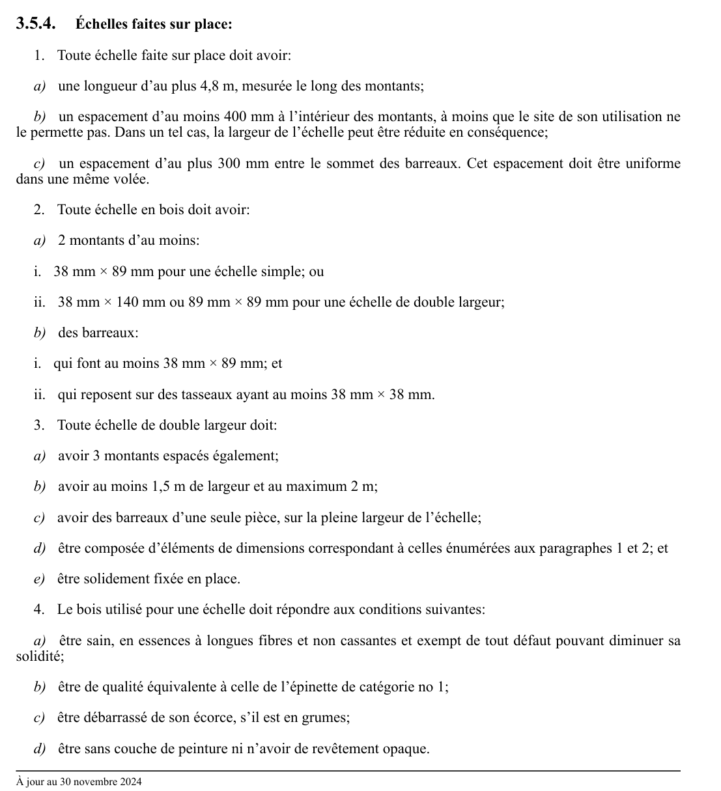

art-3.5.4-CSTC : échelles faites sur place
Échelles faites sur place: 1. Toute échelle faite sur place doit avoir: a) une longueur d'au plus 4,8 m, mesurée le long des montants; b) un espacement d'au moins 400 mm à l'intérieur des montants, à moins que le site de son utilisation ne le permette pas.
🌐 LegisQuébec · 📄 PDF officiel
Texte officiel
Échelles faites sur place:
1. Toute échelle faite sur place doit avoir:
a) une longueur d’au plus 4,8 m, mesurée le long des montants;
b) un espacement d’au moins 400 mm à l’intérieur des montants, à moins que le site de son utilisation ne le permette pas. Dans un tel cas, la largeur de l’échelle peut être réduite en conséquence;
c) un espacement d’au plus 300 mm entre le sommet des barreaux. Cet espacement doit être uniforme dans une même volée.
2. Toute échelle en bois doit avoir:
a) 2 montants d’au moins:
i. 38 mm × 89 mm pour une échelle simple; ou
ii. 38 mm × 140 mm ou 89 mm × 89 mm pour une échelle de double largeur;
b) des barreaux:
i. qui font au moins 38 mm × 89 mm; et
ii. qui reposent sur des tasseaux ayant au moins 38 mm × 38 mm.
3. Toute échelle de double largeur doit:
a) avoir 3 montants espacés également;
b) avoir au moins 1,5 m de largeur et au maximum 2 m;
c) avoir des barreaux d’une seule pièce, sur la pleine largeur de l’échelle;
d) être composée d’éléments de dimensions correspondant à celles énumérées aux paragraphes 1 et 2; et
e) être solidement fixée en place.
4. Le bois utilisé pour une échelle doit répondre aux conditions suivantes:
a) être sain, en essences à longues fibres et non cassantes et exempt de tout défaut pouvant diminuer sa solidité;
b) être de qualité équivalente à celle de l’épinette de catégorie no 1;
c) être débarrassé de son écorce, s’il est en grumes;
d) être sans couche de peinture ni n’avoir de revêtement opaque.
5. Lorsqu’il est prévu qu’une échelle faite sur place excède la longueur maximale permise de 4,8 m, cette échelle doit être conçue par un ingénieur, ainsi qu’en font foi un plan et une attestation signés et scellés par ce dernier.
Texte de l’article 3.5.4 CSTC, extrait de la couche texte du PDF officiel (page 58), sans OCR ni retouche. La capture ci-dessous et le PDF font foi.
{kind=link}

Toucher l'image pour l'agrandir🔗 CSTC.pdf : page 58 · texte à jour au 30 novembre 2024
📚 Source légale : R.R.Q., 1981, c. S-2.1, r. 6, a. 3.5.4; D. 329-94, a. 36; D. 606-2014, a. 10. · LégisQuébec
Voir aussi
- art. 3.5.3
- art. 3.5.5
- ⚖️ Loi habilitante : LSST
- ↑ Section 3 : Chantiers de construction
Pages qui pointent ici (3)
- art-3.5.3-CSTC : échelles commerciales Recueil législatif
- art-3.5.5-CSTC : la longueur maximale d'une échelle à coulisse Recueil législatif
- CSTC : Section 3 : Chantiers de construction Recueil législatif